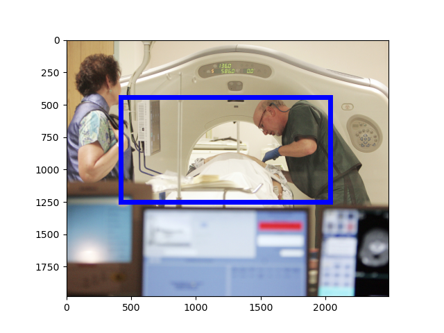
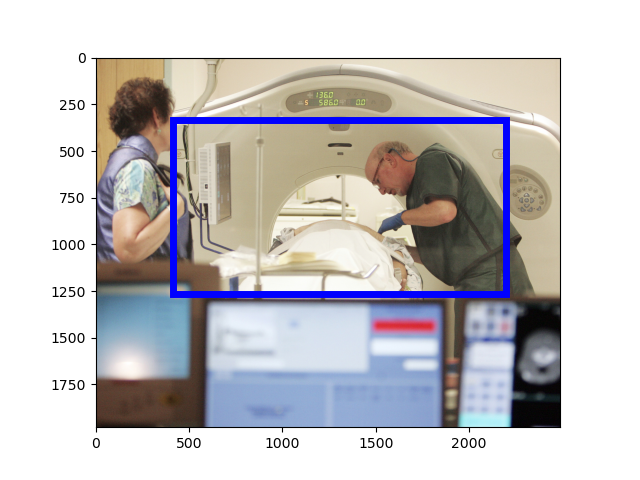
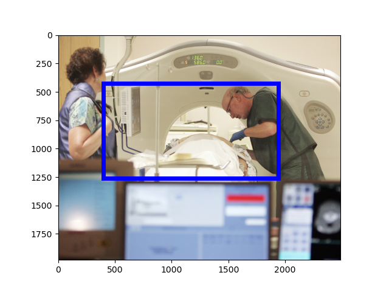

[Raw Text]: FILE - A physician uses a CT scanner to screen a patient for lung cancer at Southern New Hampshire Medical Center in Nashua, New Hampshire, June 3, 2010.
======================================================================
Mention: http://www.isi.edu/gaia/entities/uiuc/VOA_EN_NW_2017_05_17_3855016_0/EN_Entity_EDL_0000550
---- VOA_EN_NW_2017_05_17_3855016_0:49-55 FILE - A physician uses a CT scanner to screen a patient for lung cancer at Southern New Hampshire Medical Center in Nashua , New Hampshire , June 3 , 2010 .
Image:
GroundingConfidence: http://www.columbia.edu/AIDA/DVMM/Entities/GroundingBox/RUN00006/JPG/VOA_EN_NW_2017_05_17_3855016_0/4, 0.9072785
Event:
======================================================================
Mention: http://www.isi.edu/gaia/entities/uiuc/VOA_EN_NW_2017_05_17_3855016_0/EN_Entity_EDL_0000548
---- VOA_EN_NW_2017_05_17_3855016_0:76-112 FILE - A physician uses a CT scanner to screen a patient for lung cancer at Southern New Hampshire Medical Center in Nashua , New Hampshire , June 3 , 2010 .
Image:
GroundingConfidence: http://www.columbia.edu/AIDA/DVMM/Entities/GroundingBox/RUN00006/JPG/VOA_EN_NW_2017_05_17_3855016_0/2, 0.542173

Event:
======================================================================
Mention: http://www.isi.edu/gaia/entities/uiuc/VOA_EN_NW_2017_05_17_3855016_0/EN_Entity_EDL_0000547
---- VOA_EN_NW_2017_05_17_3855016_0:66-71 FILE - A physician uses a CT scanner to screen a patient for lung cancer at Southern New Hampshire Medical Center in Nashua , New Hampshire , June 3 , 2010 .
Image:
GroundingConfidence: http://www.columbia.edu/AIDA/DVMM/Entities/GroundingBox/RUN00006/JPG/VOA_EN_NW_2017_05_17_3855016_0/1, 0.7537681

Event:
======================================================================
Mention: http://www.isi.edu/gaia/entities/uiuc/VOA_EN_NW_2017_05_17_3855016_0/EN_Entity_EDL_0000549
---- VOA_EN_NW_2017_05_17_3855016_0:9-17 FILE - A physician uses a CT scanner to screen a patient for lung cancer at Southern New Hampshire Medical Center in Nashua , New Hampshire , June 3 , 2010 .
Image:
GroundingConfidence: http://www.columbia.edu/AIDA/DVMM/Entities/GroundingBox/RUN00006/JPG/VOA_EN_NW_2017_05_17_3855016_0/3, 0.9041597

Event:
======================================================================